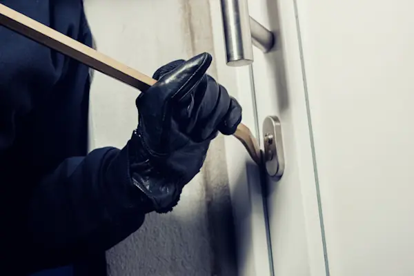
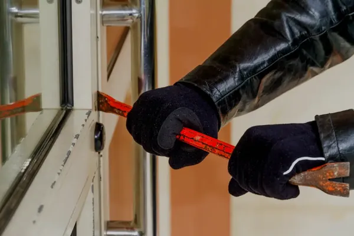
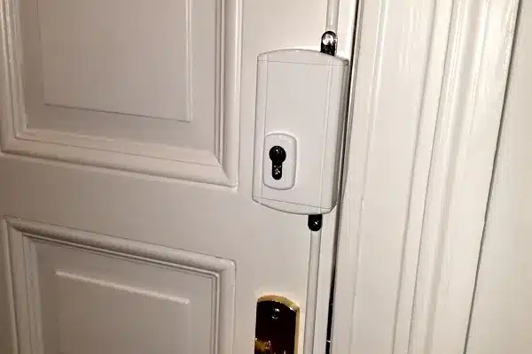
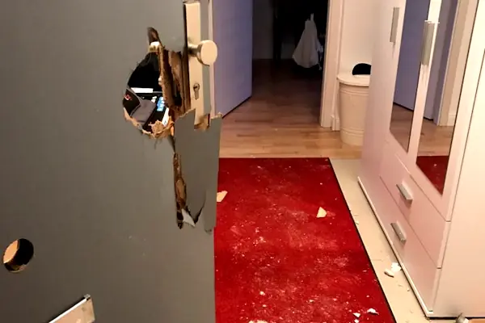

Wohnungs- und Haustür
Oft sitzt ein guter Zylinder in einem Beschlag, der ihn nicht schützt, oder die Tür hat nur einen einzelnen Riegel. Wir prüfen Zylinder, Beschlag, Bänder und Rahmen als Einheit.
Die meisten Wohnungen sind nicht deshalb schlecht gesichert, weil niemand daran gedacht hätte – sondern weil an der falschen Stelle nachgerüstet wurde. Ein teurer Schließzylinder bringt wenig, wenn das Kellerfenster daneben mit einem Schraubendreher aufgeht. Deshalb schauen wir uns zuerst an, wo Ihre Tür und Ihre Fenster tatsächlich nachgeben, und sagen Ihnen danach, was sich lohnt.
Openmydoor24 ist seit 2022 als Schlüsseldienst in Aachen unterwegs und sieht aufgebrochene Türen nicht auf Fotos, sondern in echten Wohnungen. Wir empfehlen nur, was an Ihrer konkreten Tür etwas ändert.
Der typische Einbruch ist unspektakulär. Angesetzt wird mit einem Schraubendreher oder einem kleinen Hebel – an der Schlossseite der Tür, am Fensterflügel oder an der Terrassentür. Steht der Schließzylinder über den Beschlag hinaus, lässt er sich zusätzlich greifen und abbrechen. Aufwendige Werkzeuge braucht dafür niemand.
Wer nach kurzer Zeit nicht drin ist, bricht in aller Regel ab und sucht sich ein leichteres Ziel. Genau darum geht es beim Einbruchschutz: jede Sekunde, die ein verstärkter Beschlag, ein stabiler Rahmen oder eine gesicherte Fensterolive zusätzlich kostet, erhöht die Wahrscheinlichkeit, dass es beim Versuch bleibt.
Eine nur zugezogene Tür hält fast nichts – erst das Abschließen bringt die Riegel in den Rahmen. Die einzige Maßnahme ohne Material und Montage, und trotzdem die am häufigsten vergessene.

Was bei der Begehung fast immer auffällt – unabhängig davon, ob Altbau oder Neubau.
Oft sitzt ein guter Zylinder in einem Beschlag, der ihn nicht schützt, oder die Tür hat nur einen einzelnen Riegel. Wir prüfen Zylinder, Beschlag, Bänder und Rahmen als Einheit.

Erdgeschoss, Souterrain und alles, was über ein Garagendach oder eine Mülltonne erreichbar ist. Ältere Fenster laufen oft auf einfachen Rollzapfen, die sich in Sekunden aus dem Rahmen drücken lassen.

In Aachener Altbauten stecken viele Originaltüren mit einfachem Einsteckschloss. Nachrüsten geht meist gut, ohne dass die Tür ihren Charakter verliert – nur nicht mit einem neuen Zylinder allein.
Welche Bauteile dafür infrage kommen und was sie leisten, haben wir auf der Seite zur Sicherheitstechnik zusammengestellt.
Rufen Sie an – wir schauen es uns vor Ort an. Die Erstberatung kostet nichts.

Rufen Sie die Polizei und lassen Sie die Wohnung so, wie Sie sie vorgefunden haben, bis die Spuren aufgenommen sind. Fotografieren Sie den Schaden an Tür und Rahmen für die Versicherung. Erst danach kommen wir und machen die Tür wieder zu.
Wir bauen das beschädigte Schloss aus, ersetzen Zylinder und Beschlag und richten Tür und Rahmen so weit her, dass wieder sauber verriegelt wird. Lässt sich ein Bauteil nicht sofort beschaffen, sichern wir die Tür provisorisch, damit sie über Nacht verschlossen bleibt.
Direkt nach einem Einbruch wird vieles aus dem Bauch entschieden. Wir reparieren zuerst und kommen für die Beratung ein zweites Mal – in Ruhe und mit dem Wissen, wo angesetzt wurde.
Sie rufen an oder schreiben uns per WhatsApp und schildern kurz, worum es geht: Altbauwohnung, Reihenhaus, Ladenlokal. Wir machen einen Termin, der Ihnen passt.
Wir gehen Haustür, Wohnungstür, Fenster, Terrassentür und Nebeneingänge durch und prüfen Zylinder, Beschlag, Verriegelung und Rahmen – auch von innen.
Sie bekommen eine Reihenfolge: was zuerst, was später und was Sie sich sparen können. Material und Montage nennen wir vorher, nicht hinterher.
Ja. Es geht fast nie darum, ob eine Tür theoretisch zu überwinden ist, sondern wie lange es dauert und wie laut es wird. Wer nach kurzer Zeit nicht drin ist, bricht in aller Regel ab. Deshalb zählt jede zusätzliche Sekunde.
Ein guter Zylinder schützt das Schloss, mehr nicht. Wenn Türblatt, Rahmen oder Beschlag nachgeben, wird die Tür daneben aufgehebelt. Sinnvoll ist deshalb die Kombination aus Zylinder, Schutzbeschlag und einer Verriegelung, die wirklich in den Rahmen greift.
Für Mieter gibt es Lösungen, die ohne größeren baulichen Eingriff montiert und später wieder abgebaut werden können. Alles, was in die Substanz von Tür oder Rahmen eingreift, sollten Sie vorher mit dem Vermieter absprechen. Bei der Beratung ordnen wir jede Maßnahme entsprechend ein.
Die Erstberatung ist kostenlos. Material und Montage rechnen wir nach Aufwand ab und nennen Ihnen die Kosten, bevor etwas bestellt oder eingebaut wird. Unsere Preisliste gilt für Türöffnungen; Montagearbeiten und Material sind darin nicht enthalten.
Rufen Sie uns an, sobald die Polizei die Spuren aufgenommen hat. Wir sind täglich von 08:00 bis 24:00 Uhr erreichbar, freitags und samstags bis 02:00 Uhr nachts, und im Aachener Stadtgebiet in der Regel innerhalb von 30 Minuten bei Ihnen.
Konkrete Bauteile – Zusatzschlösser, Schutzbeschläge, Fenstersicherungen – finden Sie unter Sicherheitstechnik in Aachen. Ist ein Schlüssel weg oder das Schloss beschädigt, hilft der Schlosswechsel. Für Mehrfamilienhäuser und Gewerbeobjekte planen wir Schließanlagen. Was eine Türöffnung kostet, steht in der Preisübersicht.